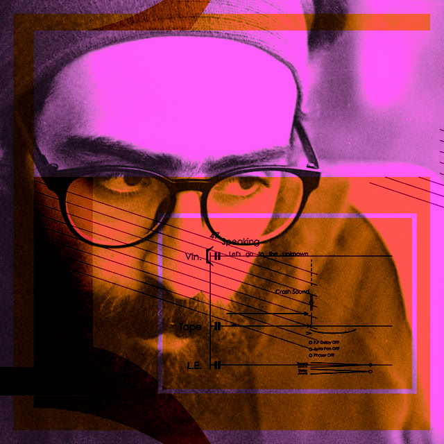

Arash Azadi english | русский | works | contact

Healing Light Through Stained Glasses (2022)
Eagerness to Learn (2020)
Geosonic Journeys (2017)
Mathematical Labyrinth (2019)
Legitimation Crisis (2021)
Water and Prayer (2020)
Totem and the Fears (2020)
Designed by Arash Azadi